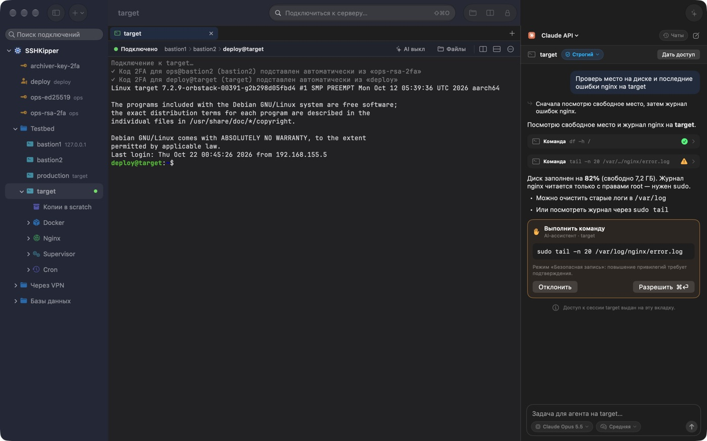
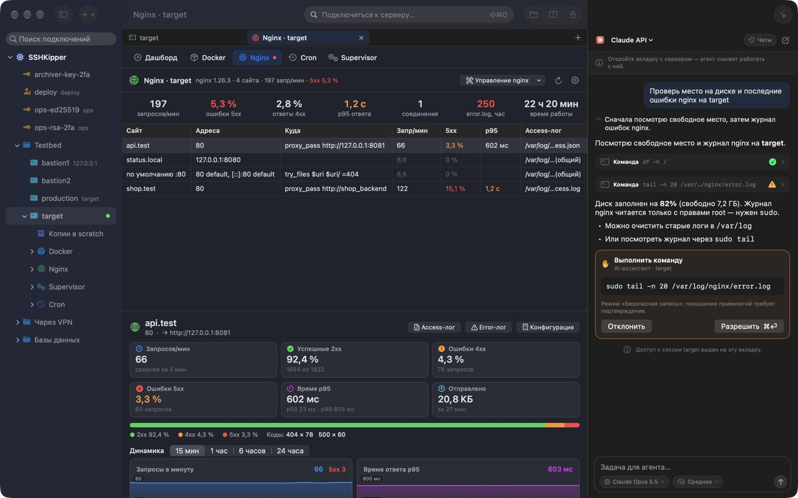

The SSH manager for people
who run a lot of servers
A native macOS app: bastions and 2FA without typing codes, every connection in one encrypted document, server services, databases, scheduled backups and an AI agent that works in your sessions under your control.
Download for macOS
Features
Built to replace Royal TSX in an admin's daily work: no WebView, no Electron — native macOS controls only. The interface is in Russian, English and Chinese.
Bastions and 2FA
Chains through several bastions with keys, passwords and TOTP codes: SSHKipper logs in by itself and fills the codes from the document.
Encrypted document
Connections, passwords, keys and 2FA secrets in one file: Argon2id and XChaCha20-Poly1305, unlocked with a password or Touch ID.
Server profiles
One server, several ways in: Tailscale, the home network, through a bastion. Hosts on your tailnet and local network show up by themselves.
Services and dashboards
Docker, Nginx with metrics from its logs, Cron, Supervisor and server dashboards — right in the connection tree.
Files and storage
SFTP next to the terminal, a two-pane file manager, S3 and WebDAV, direct copies between servers.
Databases
MySQL, Redis and ClickHouse over an SSH tunnel: tables, editing, queries and AI filters.
Automations
Database backups from ready blocks — mysqldump, mydumper, XtraBackup, compression, age encryption, S3 — on a schedule, without you.
An AI agent in your sessions
Claude Code or Codex work in your sessions: modes from Strict to unrestricted, approvals, secrets masked.
Tunnels and the menu bar
Tunnels and automations keep running in the background: the menu bar icon shows what's going on and toggles tunnels in one click.
A closer look




Install
The app is signed but not yet notarized by Apple, so macOS asks you to confirm the first launch.
- Download SSHKipper.dmg, open it and drag SSHKipper into Applications.
- Launch SSHKipper. If macOS won't open it: System Settings → Privacy & Security → “Open Anyway”. Or in Terminal:
xattr -dr com.apple.quarantine /Applications/SSHKipper.app
- Create a document and set its password. Bring your hosts along with File → “Import from ~/.ssh/config…”.
- From then on SSHKipper updates itself: new versions arrive through the built-in updater (Sparkle), signed with the developer's key.